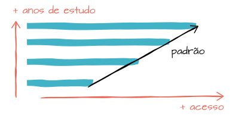
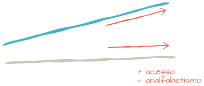

Estudantes acessam mais a internet...
Mais de 70% dos estudantes do país acessam a internet, uma porcentagem bem maior do que os pouco menos de 40% dos não-estudantes.
... e estudantes da rede privada acessam mais ainda
Entre os estudantes da rede privada, 19 entre 20 são internautas.
Quanto mais estudo, mais uso de internet
Observando o gráfico "Utilização da internet por grupo de anos de estudo" em valores relativos, podemos ver que quanto mais a pessoa estuda, mais ela está propensa a utilizar a internet.
O percentual de acesso é de aproximadamente 12% entre as pessoas com 4 anos ou menos de estudo, enquanto entre aqueles com mais de 15 anos de estudo esse percentual fica acima dos 90%.
Mas em números absolutos...
Ninguém chega perto dos usuários com 11 a 14 anos de estudo: são mais de 32 milhões de usuários.
É perceptível também a grande quantidade de pessoas que não acessam a internet entre aqueles com 10 anos ou menos de estudo. Para ações de inclusão digital, é válido levar em consideração este dado para se chegar em campanhas adequadas a estas pessoas com um baixo grau de instrução.
Considerando o Brasil como um todo, a internet não ajudou a melhorar (e nem piorar) as taxas de analfabetismo
Poderia haver uma relação inversa entre estas taxas, o que poderia indicar que o aumento no acesso à internet ajudou na alfabetização da população:
E também poderia haver uma relação direta entre estas taxas, ou seja, internet atrapalhando na alfabetização:
Mas o que existe é um aumento da utilização da internet enquanto as taxas de analfabetismo se mantém:
Nordeste
É a única região onde as linhas parecem evoluir de forma inversamente proporcional. Será que nesta região, especificamente, o aumento no acesso à internet colaborou de alguma forma na diminuição das taxas de analfabetismo?
Curiosidade
Em 2005, haviam mais pessoas não alfabetizadas do que pessoas que utilizavam a internet no nordeste:
Um questionamento válido relacionado a este cenário: quanto preparada a internet está para os usuários não alfabetizados?